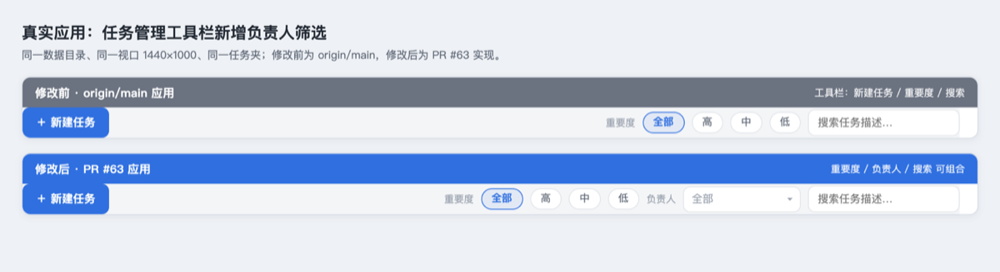
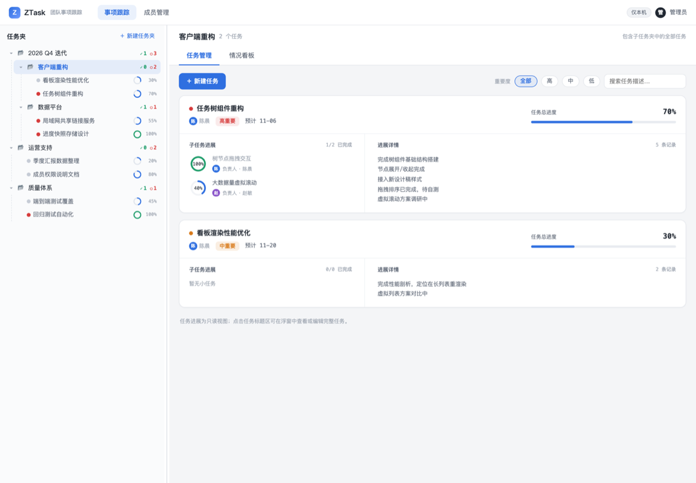
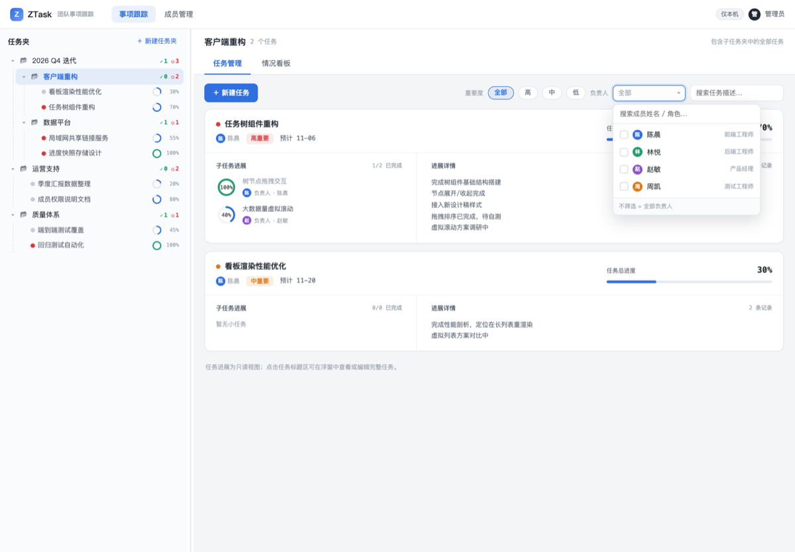
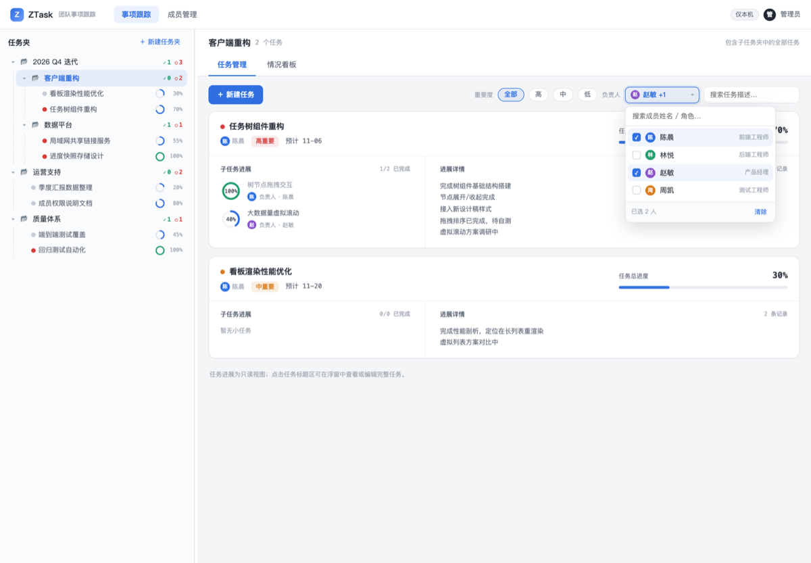
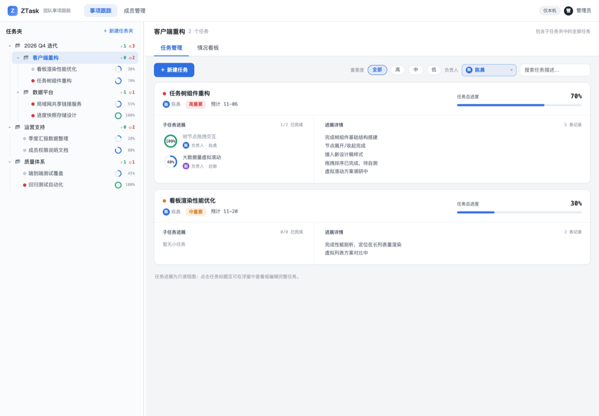
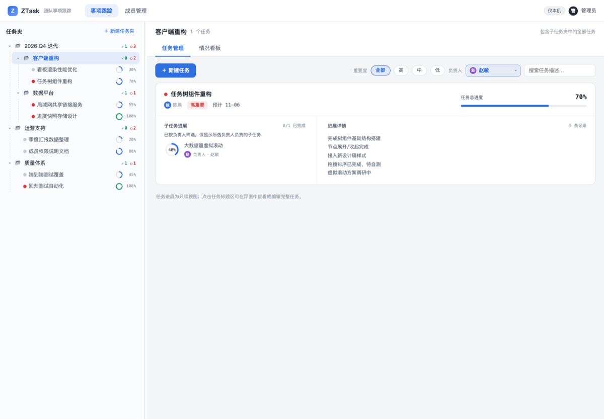
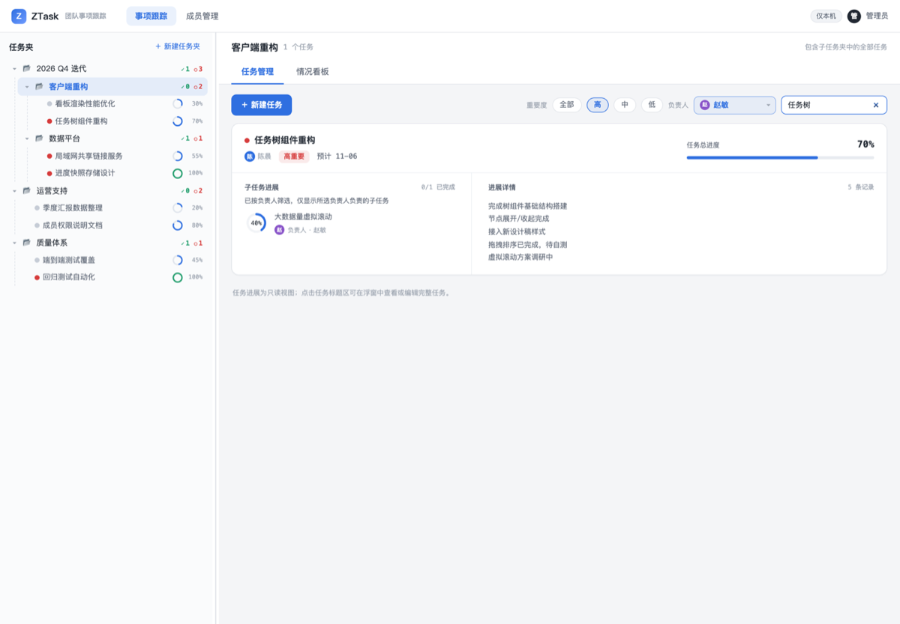
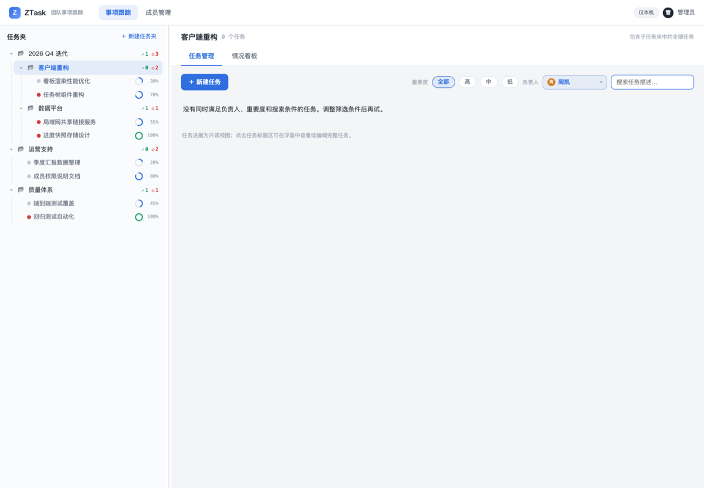
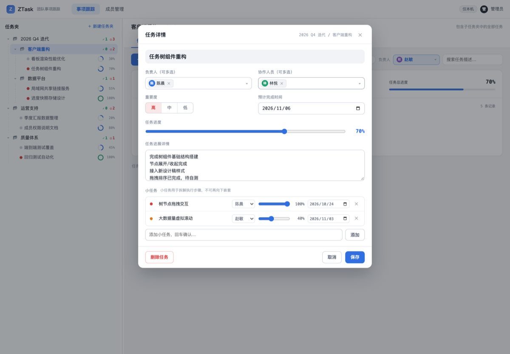
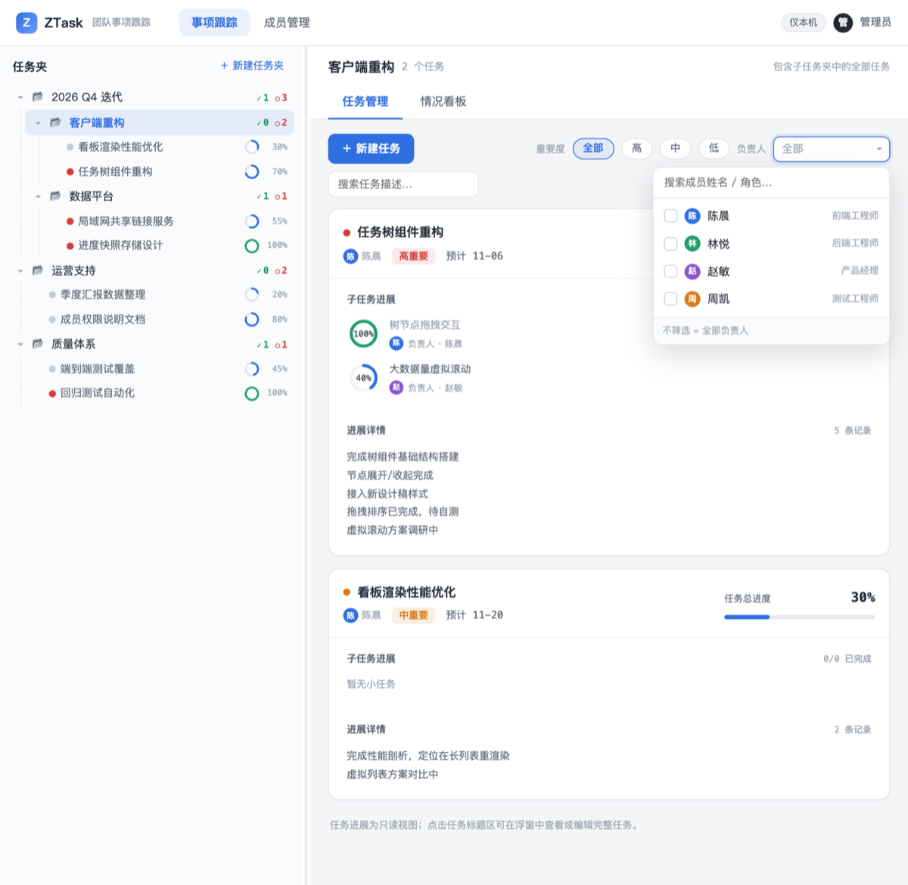

- Commit
- 48b7e96
- Branch
- agent/add-assignee-filter-f05e2ec57fa1
- App
- Vite production build + Fastify serve
- API
- 真实 /api/v1/admin/tasks（临时数据目录）
- Baseline
- origin/main 7065282
- Viewport
- 1440×1000；窄屏 1024×1000
ZTask · 2026-11-03 · PR #63
任务管理负责人筛选 · 集成冒烟报告
在真实构建产物与真实 API 数据上验证负责人多选筛选：工具栏顺序、成员搜索、多选与 URL 深链、主任务/子任务两种命中、组合筛选、空态、编辑浮窗完整聚合、窄屏下拉均通过。
13冒烟场景
0失败
2浏览器视口
412自动化测试
Environment and Artifact
2026-11-03 · macOS · Chrome headless 1440×1000（窄屏另测 1024×1000）Scenario Matrix
13 pass| # | 场景 | 结果 | 说明 | 证据 |
|---|---|---|---|---|
| 01 | 基线应用无负责人筛选 | PASS | origin/main 构建产物中不存在 .fsel-trigger。 | 01-before.png |
| 02 | 工具栏顺序 | PASS | 重要度 chips → 负责人 → 搜索，与原型一致。 | 02-after.png 00-compare-toolbar.png |
| 03 | 下拉与成员搜索 | PASS | 面板展示 4 名活跃成员；输入“赵”后仅剩赵敏。 | 03-filter-open.png |
| 04 | 多选、URL 与请求参数 | PASS | 陈晨 + 赵敏触发“+1”；owners 写入 URL 且 ownerIds 请求包含两人。 | 04-multiselect.png |
| 05 | 清除筛选 | PASS | 恢复 2 条任务，owners 参数被移除。 | 05-main-owner.png |
| 06 | 主任务负责人命中 | PASS | 陈晨命中后保留整条任务与全部 2 个子任务，无裁剪提示。 | 05-main-owner.png |
| 07 | 仅子任务负责人命中 | PASS | 赵敏命中后只显示 1 个对应子任务，提示“已按负责人筛选”，计数 0/1。 | 06-subtask-owner.png |
| 08 | 负责人 + 重要度 + 搜索 | PASS | 赵敏 + 高 + “任务树”返回 1 条任务、1 个匹配子任务。 | 07-combined.png |
| 09 | 无匹配负责人空态 | PASS | 周凯在客户端重构任务夹下无匹配，显示组合条件空态。 | 08-empty.png |
| 10 | 编辑浮窗完整聚合 | PASS | 筛选后打开浮窗仍显示 2 个子任务，未把裁剪结果当完整聚合。 | 09-editor-full.png |
| 11 | owners 深链恢复 | PASS | 刷新 owners=赵敏 后触发框选中赵敏，列表为 1 条任务。 | 06-subtask-owner.png |
| 12 | 窄屏下拉不溢出 | PASS | 1024px 下方面板右边界 1004，仍在可视区内，必要时右对齐。 | 10-narrow.png |
| 13 | 页面运行错误 | PASS | 全程无 pageerror / console error。 | 02-after.png |
Issues and Observations
No defects foundNo defects were found.
Evidence
10 screenshots









Automated Coverage Assessment
4 areas reviewed| 范围 | 覆盖 | 结论 | 建议 |
|---|---|---|---|
Conclusion
集成冒烟通过13 个场景全部通过，未发现需要修复的集成问题。
- 真实构建产物与真实 API 数据上的筛选语义与原型一致。
- 列表裁剪不会污染编辑浮窗的完整聚合。
- 负责人筛选在窄屏下不会溢出。
- 合并与 issue 闭环仍需按仓库交付规则由人工/已配置的合并入口执行。
Generated by computer-use-smoke-reporting from Playwright browser evidence; no private Feishu content or credentials included.